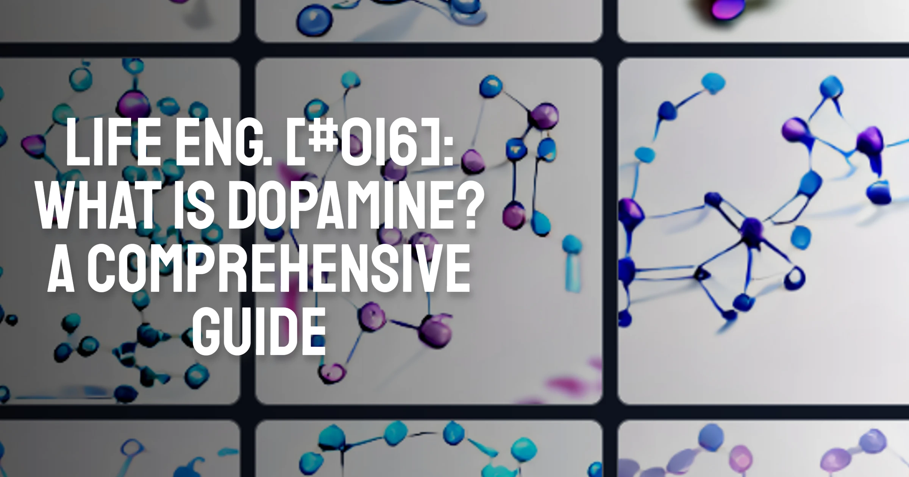
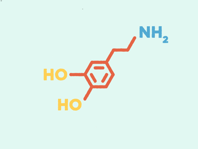

What is Dopamine? A Comprehensive Guide 🔬
Dopamine - a neurotransmitter that plays a key role in the brain’s reward and pleasure centers. It is involved in many important functions, including motivation, memory, and attention.
The release of dopamine in the brain is closely tied to our sense of pleasure and reward. When we experience something pleasurable, such as eating our favorite food or spending time with loved ones, our brain releases dopamine, which helps us feel happy and motivated. This is why dopamine is often referred to as the “feel-good” neurotransmitter. It helps us feel motivated to do the things we love, and it helps us feel satisfied when we achieve our goals.
However, dopamine is not just involved in feelings of pleasure and reward. It is also important for our ability to focus and pay attention. When we are faced with a task that requires our concentration, our brain releases dopamine to help us focus and stay on track.
In this article, we will go over the ways in which dopamine affects us mentally and physically, so you can keep it in mind when managing your work.
Dopamine - the productivity stimulus
We are used to seeing the word “dopamine” being directly or indirectly linked to productivity and motivation.
Think about it, on a plain level, there is not a physical manifestation of something being pleasurable or not. By that I mean, if you’re a robot equipped with all sensory organs (the ability to see, feel textures, hear, etc.), you would still be unable to make decisions as to what to touch, see or do. This is because you have no straightforward mechanism of knowing what is going to “benefit” you - evolutionary or not.
So in order to create an incentive-reward system to control our own behaviour, we evolved to have those neurotransmitters you’ve been hearing about, including dopamine.
This is why dopamine is often considered an important neurotransmitter for productivity and motivation. When our brain has enough dopamine, we are able to concentrate, stay motivated, and achieve our goals.
And while this system works perfectly fine to make us eat food so we don’t starve to death, our current needs have evolved to be far more than purely physiological.
This is why it’s harder to choose the long-term gratification that takes effort to acquire as opposed to the short-term quick dopamine hits that our world provides.
How does quick dopamine affect us?
Quick dopamine refers to the rapid release of dopamine in response to a pleasurable stimulus. This can happen in a number of ways, such as taking drugs that increase dopamine levels, engaging in risky or thrilling activities, or engaging in addictive behaviors such as gambling or excessive shopping.
When dopamine is released quickly and in large amounts, it can have a number of effects on the brain.
For one, it can create a sense of pleasure and reward that can motivate people to engage in the behavior again in the future. This is why quick dopamine release is often associated with addictive behaviors – the rapid release of dopamine can create a sense of pleasure that makes people want to repeat the behavior over and over.
However, the effects of quick dopamine release on the brain can also be negative. Over time, the brain becomes accustomed to the high levels of dopamine and may not respond as strongly to it in the future. This can lead to a condition known as dopamine tolerance, in which a person needs to engage in more and more of the behavior in order to experience the same level of pleasure.
Additionally, quick dopamine release can also lead to changes in the brain's structure and function. Research has shown that chronic exposure to high levels of dopamine can lead to changes in the brain's reward pathways, which can make it more difficult for a person to feel pleasure from natural rewards such as food or social interactions. This can lead to a number of negative consequences, such as social isolation, relationship problems, and mental health issues.
Dopamine fasting
Dopamine fasting is a technique that involves avoiding activities and substances that increase dopamine levels in the brain, such as drugs, excessive caffeine consumption, and highly stimulating activities. The goal of a dopamine fast is to allow the brain to reset its dopamine levels and become more sensitive to natural rewards. Some people use dopamine fasts as a way to break free from addictive behaviors or to improve their overall mental and emotional wellbeing. A dopamine fast typically involves engaging in activities that promote mindfulness and relaxation, such as meditation and deep breathing, and avoiding excessive stress.
To make a dopamine fast, a person can follow these steps:
- Avoid activities and substances that release dopamine quickly and in large amounts, such as drugs, alcohol, and excessive caffeine consumption.
- Avoid activities that are highly stimulating or pleasurable, such as gambling, excessive exercise, and excessive screen time.
- Engage in activities that promote mindfulness and relaxation, such as meditation, deep breathing, and yoga.
- Eat a balanced and healthy diet that is rich in fruits, vegetables, and lean proteins.
- Get plenty of sleep and rest.
- Avoid excessive stress and practice healthy coping mechanisms such as talking to a therapist or counselor.
- Consider participating in a dopamine fast for a set period of time, such as a day or a week, to allow the brain to reset and recalibrate its dopamine levels.
- After the dopamine fast, gradually reintroduce pleasurable activities and substances in moderation, paying attention to how they affect the brain and mood.